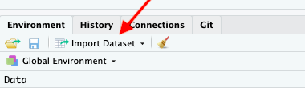

Chapter 3 Workshop
For the workshop are going to use RStudio Cloud.
First, click on the following link: http://bit.ly/rds-rstudio. Then log in with a google account, github account or any email address.
Loading RStudio Cloud might take a while. Once it appears, click on “Project” and then “Make a permanent copy”.
The goal of the workshop is to cover most of the data analysis workflow.
- Import data into R
- Make data analysis-ready through tidying & transformation
- Visualise data
- Create a short report about a dataset
We will use data describing drug use in the US and meteorite falls around the world:
drug_useis a dataset that is provided through a package by fivethirtyeight. If you typedata()into the console, you will see a list of other “in-house” datasets, and if you type for example?irisyou will see the description of the famous flower dataset. Using an R dataset can be useful when you do not want to bother with the data import.- The meteorite data was provided by TidyTuesday. TidyTuesday will be discussed later, but in summary, it is a weekly release of a dataset that has already been treated.
We will guide you through the four R-scripts, but below are some extra tips and information.
3.1 Data visualisation
The main data visualisation engine these days is the ggplot2 package.

Artwork by @ allison_horst
The main advantage of ggplot2 is the recipe-like structure, also called grammar. However, depending on your needs (e.g. interactivity) there are more suitable packages.
Here is a list of other R packages:
- ‘{esquisse}’ is an interface to create a ggplot.
- Publication ready plots with {cowplot} and {ggpubr}
- many other #dataviz libraries in R: {gganimate}, {plotly}, {vegalite}
Pick a plot with the R Graph Gallery.
3.2 Import data
Getting data into R can be cumbersome. This is mainly, because datasets need to be stored in a format that R understands. And typcially we get data from others1, and we then need to tell R how the data looks like, which can result in a command like this:
read.table("dataset.csv",
sep = ",",
fill = TRUE,
row.names = TRUE,
header = FALSE,
col.names = paste0("V", seq_len(ncol)))Instead of remembering this difficult command, RStudio helps us with this command on the top-right (“Environment”).

This allows us to import a file like in Excel, and then copy+paste the complicated command into the R-script for reproducibility.
Relevant R packages:
- Modern data import packages are
readranddata.table datapastaallows you to get data into R by simply marking a table somewhere else, e.g. in a PDF.fabricatr
3.3 Tidy + Transform Data
Before doing any actual data analysis, we need to bring the data into a analysis-friendly format. Although we humans like datasets that offer a quick overview with several columns, R prefers to have what is called tidy data. A dataset is tidy when:
- Each variable has its own column.
- Each observation has its row.
- Each value has its own cell.
Here is an example that is not tidy.
age n alcohol_use cocaine_use marijuana_use
12 2798 3.9 0.1 1.1
13 2757 8.5 0.1 3.4
14 2792 18.1 0.1 8.7But this is a tidy version:
age n drug use
12 2798 alcohol_use 3.9
12 2798 cocaine_use 0.1
12 2798 marijuana_use 1.1
13 2757 alcohol_use 8.5
13 2757 cocaine_use 0.1
13 2757 marijuana_use 3.4
14 2792 alcohol_use 18.1
14 2792 cocaine_use 0.1
14 2792 marijuana_use 8.7
15 2956 alcohol_use 29.2
...To get to a tidy dataset, we use reshaping functions from the tidyr.
Another step in the data preparation process is data transformation and data cleaning. This step of the data analysis workflow is highly interactive, and one often jumps from one to the other. For example, when doing a descriptive analysis of your dataset you might discover implausible values, which will need to be treated in the data transformation part.
This is one reason why scripts are so important. If you forgot something in a step right after the data import you can simply add the command and re-run the script.
Here is the list of handy R packages for data preparation:

Artwork by @ allison_horst
3.4 Report with Rmarkdown
In the last script, we will bundle everything we learned into one R script. You might notice that this has not the typical .R file extension, but instead .Rmd. .Rmd means RMarkdown and combines the power of Markdown and R. This form of writing is also called literal programming.
Rmarkdown files can be used to create documents, such as a presentation, a website (html) or a document (word or pdf). L
- https://rmd4sci.njtierney.com/
- rmarkdown: https://holtzy.github.io/Pimp-my-rmd/
- Look into xaringan and CSS file

Artwork by @ allison_horst
3.5 Git & R
We will not get into the details of git. But - RStudio has a git plugin and the book Happy git with R gets you all set.
- https://saghirb.github.io/shared/Getting-Started-with-Git-and-GitHub-for-R-Users.html#1
Playground: https://learngitbranching.js.org/
- use the interface
- use gist.github.com (great for blogposts and small scripts)
- start with sharing slides / gist.github (from julie lowndes keynote)
happygit with R
3.6 Finding neat packages & functions
3.7 R in the wild: examples
Here are some examples of R applied by
- Fun stuff in R: Thread on Twitter by Amelia McNamara
- Data Journalism: Roger Federer @ SRF
- The evolution of a ggplot: Blogpost by Cederic Scherer
- Research compendium:
- Animations: https://github.com/gadenbuie/tidy-animated-verbs#tidy-animated-verbs
- Fun stuff like Memes: https://djnavarro.net/post/memes-are-valid-social-commentary/
- Replication: https://notstatschat.rbind.io/2019/06/16/analysing-the-mouse-autism-data/
- API blogpost
- video, animation, presentation, website, write to excel
- …
If you are the person supplying yourself with data, make sure that you always store the data consistently, e.g. space delimitted. This way, reading data into R becomes easier.↩